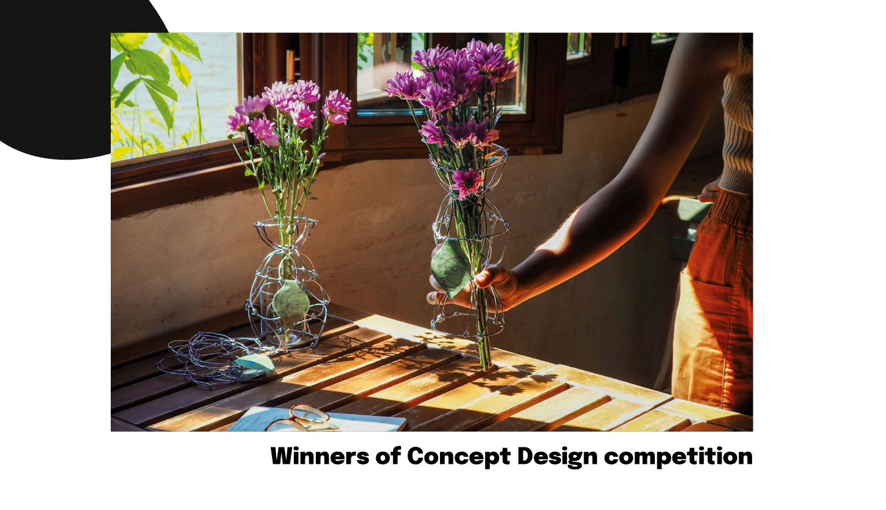
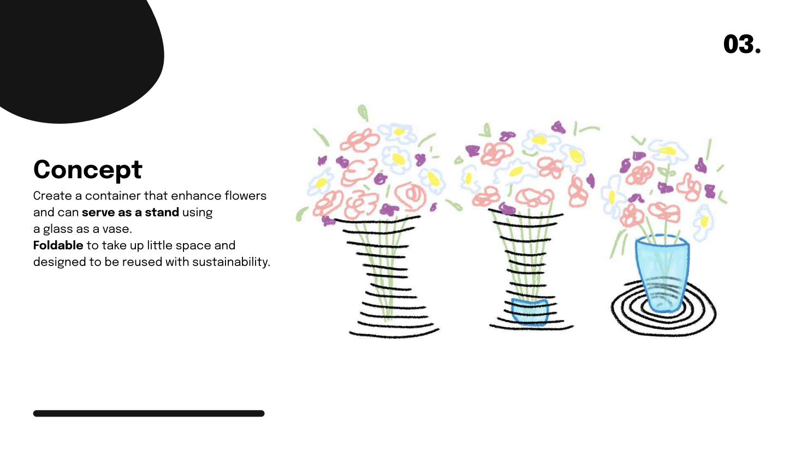
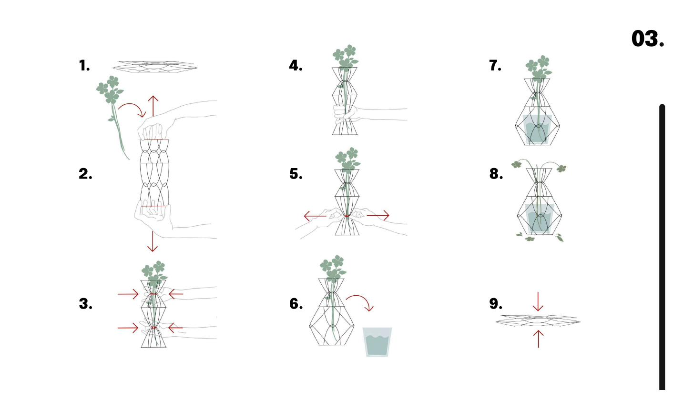

Concept
Create a container that enhances flowers and can serve as a stand using any glass as a vase. Foldable to take up minimal space, designed to be reused and shared with a spirit of sustainability. Inspired by transformable Mandalas — mechanical joints are replaced by shape-based joints, resulting in a single-material object made entirely of wire.

One material.
Infinite bloom.

Form
The hourglass silhouette references the organic form of a vase, rebuilt in wire. The shape-based joints at each intersection allow the structure to collapse flat and expand into a volumetric holder — one gesture, one object, no tools.
How it works
9 gestures from flat to blooming — the wire structure opens, locks, and holds any bouquet in place while a glass inside acts as the vase.
